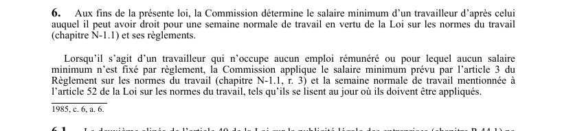

art-6-LATMP : détermination du salaire minimum
Un article du wiki ⚖️ Recueil législatif
🌐 LegisQuébec · 📄 PDF officiel (page 8)
Texte officiel : capture du PDF

🔗 Ouvrir a cette page : LATMP.pdf : page 8 · texte a jour au 20 février 2024
En bref
Pour l'application de la loi, la CNESST détermine le salaire minimum d'un travailleur d'après celui auquel il peut avoir droit pour une semaine normale de travail.
- Renvoi à la Loi sur les normes du travail pour le salaire minimum.
- À défaut d'emploi rémunéré ou de salaire fixé : salaire minimum réglementaire.
Voir aussi
- art. 5 · définition : l'employeur qui loue ou prête les services d'un travailleur en demeure l'employeur aux fins de la loi.
- art. 7 · champ d'application : la loi s'applique au travailleur victime d'un accident du travail survenu au Québec, ou d'une maladie professionnelle contractée au Québec, dont l'employeur a un établissement au Québec au moment de l'accident ou de la maladie.
- 🔢 Sous-article : art. 6.1 · définition : le deuxième alinéa de l'art.
- ↑ Loi : LATMP
Pages qui pointent ici (2)
- art-6.1-LATMP, deuxième alinéa article loi Recueil législatif
- art-7-LATMP, assujettissement obligatoire Recueil législatif